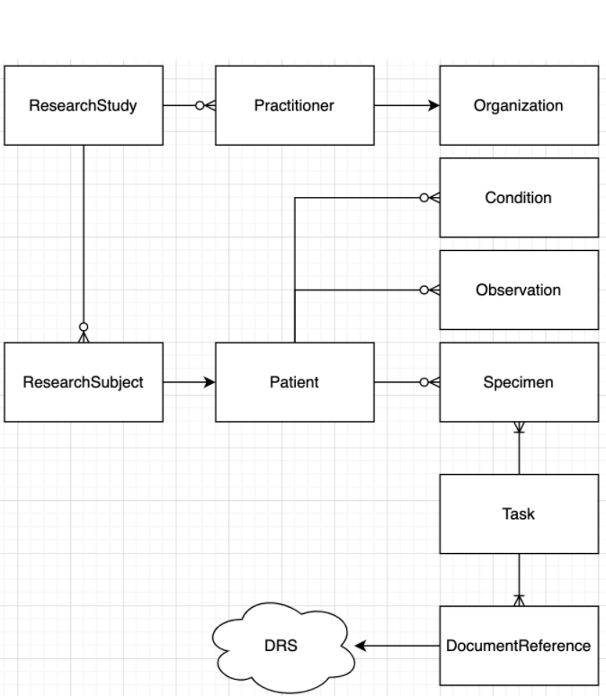

NCPI FHIR Implementation Guide - Local Development build (v0.1.0). See the Directory of published versions
Use Cases
Representing Research Studies
Data sharing is key to reproducible science. However, if the data cannot be shared in a robust, low cost manner can we effectively claim to enable reproducible science?
The aim of this effort is to produce a shared view of research structure and semantics to accelerate the scientific process and reduce impediments needed to share knowledge among researchers. FHIR has the ability to uniformly represent structure and semantics and make the data available and searchable.
This is a marked improvement over the status quo where data consumers need to contact the authors and implement an ad hoc process for access and consumption.
Our ImplementationGuide defines the structure of a study using the following Resource Types (Entities).
Your project will contain instances of these resource types, tagged with your identifiers and described by a defined vocabulary of CodableConcepts.

One can read this diagram as:
- A ResearchStudy:
- Has one-to-many Practitioners who belong to an Organization
- Has one-to-many ResearchSubjects that are associated with a Patient
- A Patient:
- Has one-to-many Conditions (Disease and Phenotypic Feature)
- Has one-to-many Specimens
- Has one-to-many Observations
- A Task:
- Has one-to-many inputs of Specimen
- Other inputs specific to the task instance
- Has one-to-many outputs of DocumentReference
- A DocumentReference:
- Refers to an digital asset, described by URI and other metadata
- A URI may refer to a DRS (GA4GH Data Repository Service) which provides a location agnostic url to digital assets.
- Has one-to-many Patients
Rare Disease
Studying rare disease is a core pillar of work across the NCPI platforms, including the NGHRI’s Centers for Mendelian Disease Genomics (CMG) and the Kids First pediatric birth defects projects. These projects are looking for variants that cause disease in individuals or among a family. This type of work requires some detailed patterns of data capture, and several of our resources are modeled specifically to address these use cases.
These investigations are often keyed to identifying a suite of “phenotypic features” and then identifying or defining one or more “diseases or syndromes” that cause these observed features. Typically, such Phenotypic Features are defined as the presence or absence of Human Phenotype Ontology (HPO) terms, and the NCPI Phenotypic Feature profile encourages HPO use and also defines how to capture the status, onset, and more. The NCPI Disease profile is designed to encourage the use of common standard vocabularies and ontologies for such diseases.
Another integral component is the Family Relationship. FHIR for clinical use doesn’t broadly enable the linking of Patient resources given the privacy related challenges. In the research setting, however, a family may have many consented study participants who have data captured. This includes the Pedigree standard, which we implement using “NCPI Family Relationship”. This resource allows the fully-featured Patients with data to be connected, unlike the FamilyMemberHistory which is designed to provide single details unlinked to the family member’s Patient record (if it exists).
We also hope to provide mechanisms for linking observed variants to the Diseases they cause. This will allow researchers to share results or hypotheses in a clear, structured, interoperable manner.
Childhood Cancer
Childhood cancers are considered rare diseases in the general population, but they are a leading cause of death in children. The underlying causes of many childhood cancers still remain unknown. Therefore, robust abilities to capture, share and aggregate data about childhood cancer is important to improve understanding. This includes overlap with rare disease research, for example there are known associations with birth defects and childhood cancer risk (https://pubmed.ncbi.nlm.nih.gov/31219523/). This helps drive the use case of reusing the NCPI Phenotypic Feature profile and the NCPI Family Relationship in the context of childhood cancer can provide the ability to aggregate and cross-analyze data for discovery.
Other data modalities that are important include pathology, imaging, and molecular characterization are critical for the research community. As pathology and imaging are already part of standard clinical care practice, the associated FHIR resources can be reused for research purposes. This could provide a streamlined way for consented data to flow from clinical systems to research platforms. The molecular characterization is a key use case across the NCPI platforms as for research purposes access to the raw data is often important for new methods development and re-analysis. This also highlights how FHIR can work with GA4GH standards as the NCPI IG provides the DRS Document Reference which is the recommended structure for pointing to a GA4GH DRS location for retrieve of the raw data, such as CRAM/BAM, FASTQ, VCF, etc.
Additionally, research on improving outcomes in childhood cancer relies on capturing treatment information, adverse events and other follow up. The longitudinal nature of the data is one of many driving use cases for the use of the relativeDateTime extension. Especially in childhood cancer, the unit of time actually captured can vary between days, months and years depending on the specific cancer type of study. While generally actual age is preferred, sometimes the deidentified time unit received is from the time of study/trial enrollment. The extension allows both the units and the value to which the time is relative to (e.g. date of birth or date of enrollment) to be flexibly but explicitly stated so that downstream systems/analysis can utilize or perform transform as needed.
Existing Study Data
Researchers have been capturing data electronically for many years, and methods vary from local spreadsheets to enterprise systems like REDCap and SalesForce. Delimited text files have been the lingua franca of data exchange because they can be browsed by software like Excel and can be read by most software for analysis. However, these systems often don’t require conformance with any particular standard, and it’s often challenging or impossible to enforce such requirements if it is even considered. Much of the data in dbGaP falls into this category of “spreadsheet with human readable metadata”, which is often not sufficient for automatic integration across studies.
Enabling systems to share data via FHIR promotes interoperability by allowing the data semantics to be integrated with the representation. This is very clear in a data capture pattern found today: One column of data is the type of clinical test and the other is the clinical test result. This is a very flexible arrangement, but a CSV does not have a clear way to associate the meanings of those columns, even if they are known and documented. FHIR provides a way to explicitly model the semantics- one can know what each piece of information means in relation to any others.
The current gap is that this modeling requires embedding this additional knowledge in the systems. FHIR provides a target for that transformation that is flexible, yet with semantic power. Purpose build systems designed to capture certain sets of data could readily build modules to export FHIR, eg, transforming assertions about the presence of HPO terms.

As shown here, the mapping is typically quite simple conceptually. For a human, it’s quite simple to read the documentation and understand, but the logic is not typically encoded in a fashion that allows it to be machine computable. Another typical pattern, where columns reflect specific observation types, is below. It is also straightforward to define the relationship of the “source data” to FHIR.
This process can be rapidly leveraged by existing studies and efforts are ongoing for the CARING for Children with COVID project to bring in clinical study data relevant to the efforts to be distributed to participating platforms via FHIR.
EHR Data
Electronic Health Record (EHR) data is a treasure trove of opportunity for research. Several initiatives are contributing EHR data to NCPI partner platforms. With the Office of the National Coordinator of Health Information Technology’s (ONC) mandate that all US healthcare providers support FHIR R4 elements defined as the “US Core Data for Interoperability”, there is a solid foundation for data export over FHIR. While EHRs had supported some DSTU2 elements (ie, 2 major versions old), it was ad hoc and seemed exploratory for the groups. This new requirement by the US Federal government (in spite of early pushing back by vendors, e.g. Epic) has already created movement in a direction to support interoperability with FHIR.
For our uses here, if the healthcare system successfully integrates FHIR, research use cases will be able to extract robust clinical information from EHRs in an interoperable manner. This could provide a huge boost for data extraction and sharing, especially when providing access to EHR data has been one of the most challenging areas. It also provides more access for patients themselves to access their data, eg, Apple Health Records and Sync for Science, using the FHIR APIs.
There are likely to be some challenges still in that many of the organizations doing research on EHR data have worked hard to provide supplementary mappings and knowledge into the EHR data extracts. For example, historic laboratory measures may not have standard LOINC codes attached, making semantic interoperability more of a challenge. However, the scope and challenges here have not been well assessed, and presumably data quality will improve over time as these approaches become more standard.
This IG will mainly serve to provide the ResearchStudy and ResearchSubject resource layer on top of the EHR data as collected. Additional work may need to be done to address the challenges of EHR data interoperability and consistency, but this is within the bounds of any other type of study data.
Electronic Health Record (EHR) data is a treasure trove of opportunity for research. Several initiatives are contributing EHR data to NCPI partner platforms. With the Office of the National Coordinator of Health Information Technology’s (ONC) mandate that all US healthcare providers support FHIR R4 elements defined as the “US Core Data for Interoperability”, there is a solid foundation for data export over FHIR. While EHRs had supported some DSTU2 elements (ie, 2 major versions old), it was ad hoc and seemed exploratory for the groups. This new requirement by the US Federal government (in spite of early pushing back by vendors, eg EPIC) has already created movement in a direction to support interoperability with FHIR.
For our uses here, if the healthcare system successfully integrates FHIR, research use cases will be able to extract robust clinical information from EHRs in an interoperable manner. This could provide a huge boost for data extraction and sharing, especially when providing access to EHR data has been one of the most challenging areas. It also provides more access for patients themselves to access their data, eg, Apple Health Records and Sync for Science, using the FHIR APIs.
There are likely to be some challenges still in that many of the organizations doing research on EHR data have worked hard to provide supplementary mappings and knowledge into the EHR data extracts. For example, historic laboratory measures may not have standard LOINC codes attached, making semantic interoperability more of a challenge. However, the scope and challenges here have not been well assessed, and presumably data quality will improve over time as these approaches become more standard.
This IG will mainly serve to provide the ResearchStudy and ResearchSubject resource layer on top of the EHR data as collected. Additional work may need to be done to address the challenges of EHR data interoperability and consistency, but this is within the bounds of any other type of study data.